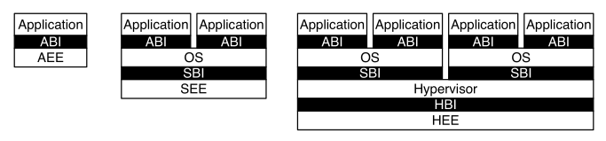

1.1. Introduction
This document describes the RISC-V privileged architecture, which covers all aspects of RISC-V systems beyond the unprivileged ISA, including privileged instructions as well as additional functionality required for running operating systems and attaching external devices.
|
Commentary on our design decisions is formatted as in this paragraph, and can be skipped if the reader is only interested in the specification itself. We briefly note that the entire privileged-level design described in this document could be replaced with an entirely different privileged-level design without changing the unprivileged ISA, and possibly without even changing the ABI. In particular, this privileged specification was designed to run existing popular operating systems, and so embodies the conventional level-based protection model. Alternate privileged specifications could embody other more flexible protection-domain models. For simplicity of expression, the text is written as if this was the only possible privileged architecture. |
1.1.1. RISC-V Privileged Software Stack Terminology
This section describes the terminology we use to describe components of the wide range of possible privileged software stacks for RISC-V.
Figure 1 shows some of the possible software stacks that can be supported by the RISC-V architecture. The left-hand side shows a simple system that supports only a single application running on an application execution environment (AEE). The application is coded to run with a particular application binary interface (ABI). The ABI includes the supported user-level ISA plus a set of ABI calls to interact with the AEE. The ABI hides details of the AEE from the application to allow greater flexibility in implementing the AEE. The same ABI could be implemented natively on multiple different host OSs, or could be supported by a user-mode emulation environment running on a machine with a different native ISA.
|
Our graphical convention represents abstract interfaces using black boxes with white text, to separate them from concrete instances of components implementing the interfaces. |

The middle configuration shows a conventional operating system (OS) that can support multiprogrammed execution of multiple applications. Each application communicates over an ABI with the OS, which provides the AEE. Just as applications interface with an AEE via an ABI, RISC-V operating systems interface with a supervisor execution environment (SEE) via a supervisor binary interface (SBI). An SBI comprises the user-level and supervisor-level ISA together with a set of SBI function calls. Using a single SBI across all SEE implementations allows a single OS binary image to run on any SEE. The SEE can be a simple boot loader and BIOS-style IO system in a low-end hardware platform, or a hypervisor-provided virtual machine in a high-end server, or a thin translation layer over a host operating system in an architecture simulation environment.
|
Most supervisor-level ISA definitions do not separate the SBI from the execution environment and/or the hardware platform, complicating virtualization and bring-up of new hardware platforms. |
The rightmost configuration shows a virtual machine monitor configuration where multiple multiprogrammed OSs are supported by a single hypervisor. Each OS communicates via an SBI with the hypervisor, which provides the SEE. The hypervisor communicates with the hypervisor execution environment (HEE) using a hypervisor binary interface (HBI), to isolate the hypervisor from details of the hardware platform.
|
The ABI, SBI, and HBI are still a work-in-progress, but we are now prioritizing support for Type-2 hypervisors where the SBI is provided recursively by an S-mode OS. |
Hardware implementations of the RISC-V ISA will generally require additional features beyond the privileged ISA to support the various execution environments (AEE, SEE, or HEE).
1.1.2. Privilege Levels
At any time, a RISC-V hardware thread (hart) is running at some privilege level encoded as a mode in one or more CSRs (control and status registers). Three RISC-V privilege levels are currently defined as shown in Table 1.
| Level | Encoding | Name | Abbreviation |
|---|---|---|---|
0 |
|
User/Application |
U |
Privilege levels are used to provide protection between different components of the software stack, and attempts to perform operations not permitted by the current privilege mode will cause an exception to be raised. These exceptions will normally cause traps into an underlying execution environment.
|
In the description, we try to separate the privilege level for which code is written, from the privilege mode in which it runs, although the two are often tied. For example, a supervisor-level operating system can run in supervisor-mode on a system with three privilege modes, but can also run in user-mode under a classic virtual machine monitor on systems with two or more privilege modes. In both cases, the same supervisor-level operating system binary code can be used, coded to a supervisor-level SBI and hence expecting to be able to use supervisor-level privileged instructions and CSRs. When running a guest OS in user mode, all supervisor-level actions will be trapped and emulated by the SEE running in the higher-privilege level. |
The machine level has the highest privileges and is the only mandatory privilege level for a RISC-V hardware platform. Code run in machine-mode (M-mode) is usually inherently trusted, as it has low-level access to the machine implementation. M-mode can be used to manage secure execution environments on RISC-V. User-mode (U-mode) and supervisor-mode (S-mode) are intended for conventional application and operating system usage respectively.
Each privilege level has a core set of privileged ISA extensions with optional extensions and variants. For example, machine-mode supports an optional standard extension for memory protection. Also, supervisor mode can be extended to support Type-2 hypervisor execution as described in "H" Extension for Hypervisor Support.
Implementations might provide anywhere from 1 to 3 privilege modes trading off reduced isolation for lower implementation cost, as shown in Table 2.
| Number of levels | Supported Modes | Intended Usage |
|---|---|---|
1 |
M |
Simple embedded systems |
All hardware implementations must provide M-mode, as this is the only mode that has unfettered access to the whole machine. The simplest RISC-V implementations may provide only M-mode, though this will provide no protection against incorrect or malicious application code.
|
The lock feature of the optional PMP facility can provide some limited protection even with only M-mode implemented. |
Many RISC-V implementations will also support at least user mode (U-mode) to protect the rest of the system from application code. Supervisor mode (S-mode) can be added to provide isolation between a supervisor-level operating system and the SEE.
A hart normally runs application code in U-mode until some trap (e.g., a supervisor call or a timer interrupt) forces a switch to a trap handler, which usually runs in a more privileged mode. The hart will then execute the trap handler, which will eventually resume execution at or after the original trapped instruction in U-mode. Traps that increase privilege level are termed vertical traps, while traps that remain at the same privilege level are termed horizontal traps. The RISC-V privileged architecture provides flexible routing of traps to different privilege layers.
|
Horizontal traps can be implemented as vertical traps that return control to a horizontal trap handler in the less-privileged mode. |
1.1.3. Debug Mode
Implementations may also include a debug mode to support off-chip debugging and/or manufacturing test. Debug mode (D-mode) can be considered an additional privilege mode, with even more access than M-mode. The separate debug specification describes operation of a RISC-V hart in debug mode. Debug mode reserves a few CSR addresses that are only accessible in D-mode, and may also reserve some portions of the physical address space on a platform.